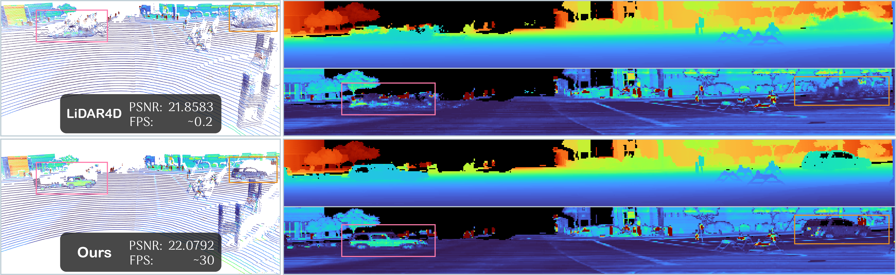

Abstract

Realistic and real-time rendering of LiDAR view in dynamic driving scenes.
Our LiDAR-RT produces high-fidelity LiDAR view at 30 FPS (64×2650) within 2 hours of training.
SOTA method struggles to model the dynamic objects in complex scenes and suffers from high
training and rendering costs (15 hours for training and 0.2 FPS for rendering a range image).
This paper targets the challenge of real-time LiDAR re-simulation in dynamic driving
scenarios.
Recent approaches utilize neural radiance fields combined with the physical modeling of LiDAR
sensors to achieve high-fidelity re-simulation results.
Unfortunately, these methods face limitations due to high computational demands in large-scale
scenes and cannot perform real-time LiDAR rendering.
To overcome these constraints, we propose LiDAR-RT, a novel framework that
supports real-time, physically accurate LiDAR re-simulation for driving scenes.
Our primary contribution is the development of an efficient and effective rendering pipeline,
which integrates Gaussian primitives and hardware-accelerated ray tracing technology.
Specifically, we model the physical properties of LiDAR sensors using Gaussian primitives with
the learnable parameters and incorporate scene graphs to handle scene dynamics.
Building upon this scene representation, our framework first constructs a bounding volume
hierarchy (BVH), then casts rays for each pixel and generates novel LiDAR views through a
differentiable rendering algorithm.
Importantly, our framework supports realistic rendering with flexible scene editing operations
and various sensor configurations.
Extensive experiments across multiple public autonomous driving benchmarks demonstrate that our
method outperforms state-of-the-art methods in terms of rendering quality and efficiency.
Our code will be made publicly available.